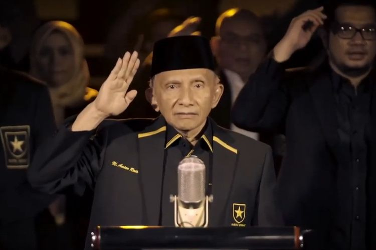

BAB V
Tokoh Nasional Indonesia
8. Amien Rais (1944-...)
|
Prof. Dr. Muhammad Amien Rais lahir di Surakarta, Jawa Tengah, pada 26 April 1944 sebagai anak kedua kepada ayah Suhud Rais dan ibunya Sudalmiyah. Keluarganya dipandang sebagai keluarga religius yang mempertahankan nilai-nilai kesantunan Jawa.
Dari TK hingga SMA, ia menempuh pendidikannya di sekitar Muhammadiyah. Kemudian, ia mengambil jurusan Hubungan Internasional di Universitas Gadjah Mada. Selama pendidikannya, Amien Rais aktif dalam kegiatan organisasi. Ia termasuk salah satu pendiri Ikatan Mahasiswa Muhammadiyah (IMM), serta menjadi anggota Himpunan Mahasiswa Islam dan Lembaga Dakwah Mahasiswa Islam. |
|
 |
Setelah UGM, Amien Rais melanjutkan pendidikan pascasarjana di University of Notre Dame, Amerika Serikat, yang diselesaikan pada 1974 dengan gelar MA. Setelah itu, ia melanjutkan program doktoral di University of Chicago, AS, pada 1981.
Setibanya di tanah air, Amien Rais menjadi tokoh cendekiawan muslim yang disegani. Ia terkenal menyorot ketidakadilan yang terjadi di masyarakat dan memelopori berdirinya Ikatan Cendekiawan Muslim Indonesia pada 7 Desember 1990.
|
|
Tatkala memburuknya ekonomi Indonesia pada pertengahan 1997, Rais gencar menyuarakan gerakan reformasi. Ia dinilai sebagai tokoh yang paling depan dan keras mengkritisi pemerintahan Orde Baru dan menolak KKN (korupsi, kolusi, nepotisme). Gerakan ini ternyata mendapat dukungan dari segenap elemen masyarakat dan akhirnya berhasil menjatuhkan kekuasaan Presiden Soeharto.
Amien Rais dikenal memiliki karisma tersendiri ketika berbicara. Ia tidak merasa takut menyuarakan kebenaran dengan tujuan yang khalis. Saat ini, tokoh reformasi Indonesia ini rupanya lebih banyak di belakang layar, tetapi perbuatan-perbuatannya tetap menjadi inspirasi yang tak akan lekang oleh hujan dan badai. |